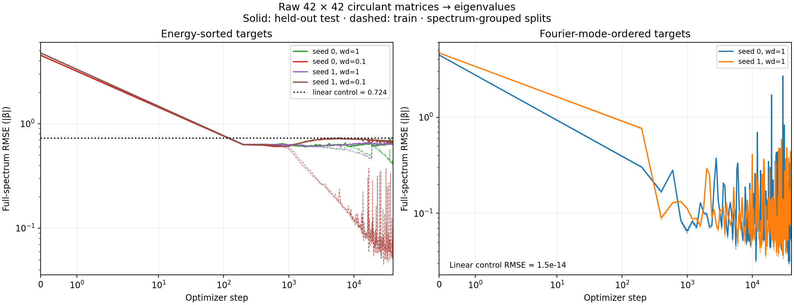

Raw matrix inputs, continuous eigenvalue outputs, and no supplied Fourier features. The mode-ordered control isolates the linear spectral map. The main task predicts eigenvalues in energy order. Distinct matrices sharing a spectrum stay in the same split.

Each frame is a saved checkpoint. Early frames are more closely spaced in optimizer steps. PCA coordinates, heatmap scales, and axes are fixed across time. Channel order is chosen from the final checkpoint for display only.
| Run | Train RMSE | Test RMSE | Linear test RMSE | Sensitivity relative error |
|---|---|---|---|---|
| mode_seed0 | 0.05076 | 0.05166 | 1.45e-14 | 0.290 |
| mode_seed1 | 0.11971 | 0.11989 | 9.67e-15 | 0.329 |
| sorted_seed0 | 0.41361 | 0.65547 | 0.724 | 1.067 |
| sorted_seed0_wd0p1 | 0.10831 | 0.68133 | 0.724 | 1.104 |
| sorted_seed1 | 0.63442 | 0.64047 | 0.728 | 1.004 |
| sorted_seed1_wd0p1 | 0.05661 | 0.68079 | 0.728 | 1.049 |
RMSE uses every eigenvalue in the full split. Sensitivity compares central finite differences on four fixed held-out matrices with the exact response to continuous changes in symmetric couplings; it is a separate local diagnostic. Ablations use 128 fixed held-out matrices, remove real Fourier subspaces before attention blocks, and preserve CLS. Random controls match subspace rank, with three draws per rank. Power concentration alone does not establish a Fourier algorithm; Gini can increase as non-DC weight power vanishes. These fixed-size mathematical circulants do not enforce carbon valence or planarity.